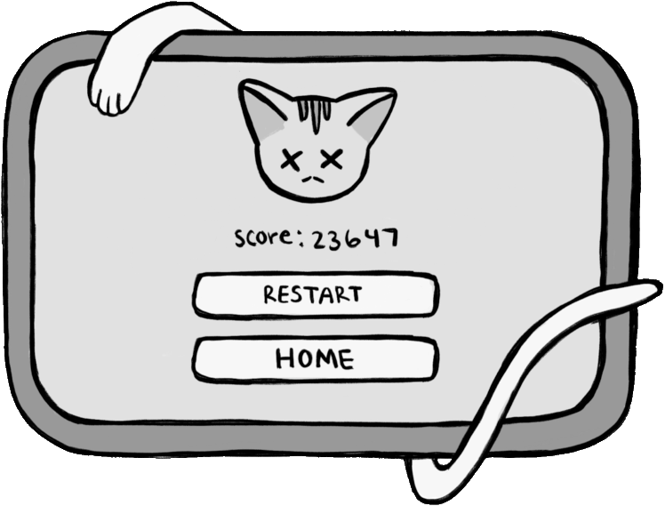

Cat Run Digital Game
Overview
Cat Run is an infinite runner game, similar to Temple Run or Subway Surfers. Working on a team with a programmer and 3D modeler, we brainstormed the gameplay, designed the mechanics, created the player model and environment, and programmed it all together in Unity. I was specifically tasked with designing the UI for the game and helping with brainstorming the mechanics of the gameplay.
What's the Game About
Everyone loves a classic infinite runner game, and what's better than cute cats running on the screen? The aim of Cat Run is simple: dodge all the oncoming cat paws by jumping and moving left or right. However, it's not as simple once the speed increases the longer you survive. Test your skills to see how high of a score you can achieve! Although a single-player game, you can encourage competition by challenging your friends to see who makes it the furthest.
Goals
- Create cute gameplay and visuals with cats!
- Fun experience for people to compete against friends to see who gets the highest score
- Be easy to pick up and understand gameplay, be suitable for all ages
Target Audience
This game targets an audience of all ages who enjoy simple, leisure games with replayability, specifically people who love cute things and cats. Since the rules are easy to understand, the gameplay is suitable for anyone to pick up and jump into right away.
Player View Sketch
Below is a sketch of how the gameplay would look from the player's point of view. I also detailed the different types of obstacles and how to evade them.
Typography
Colors
Menu Screen Concepts + Final
Playtesting
When playtesting, we allowed participants to play our game without any explanation as to what it did or what the controls were. Majority of people picked up on the controls immediately. A couple people were confused as to which controls moved the plater. One participant was unaware that jumping was a mechanic in the game. To address this, I implemented a controls panel that visually shows which keys control the player.